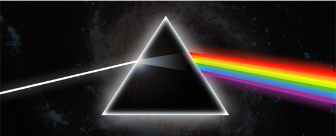

Articles
Categories
Members
Pink Floyd (укр.Пінк Флойд) - британський рок-гурт, провідний пердставник жанрів психоделічного та прогресивного року. Один із найуспішніших гуртів Великобританії, відомий своєю психоделічно-космічною музикою, філософськими текстами, експерементами зі звуком,subheder_01 цікавими обкладинками альбомів й оригінальними концертами. Гурт продав понад 210 міліонів альбомів по всьому світу[3][4][5], включаючи 74,5 міліонів альбомів у США.[6]
Гурт Pink Floyd сформувався в Лондоні в 1965р, коли Сід Барретт переїхав туди з Кембриджа і приєднався до гурту The Tea Set? що складався зі студентів Regent Street Polytechnic Ніка мейсона, Роджера Вотерса, Річард
Created at 2009-09-25
Last updated 2009-09-26
None